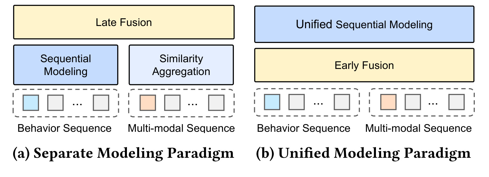
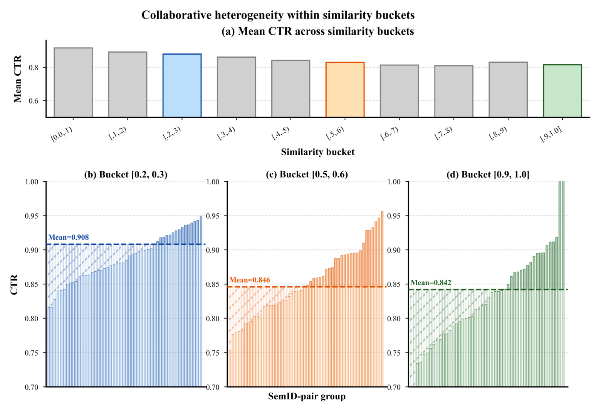
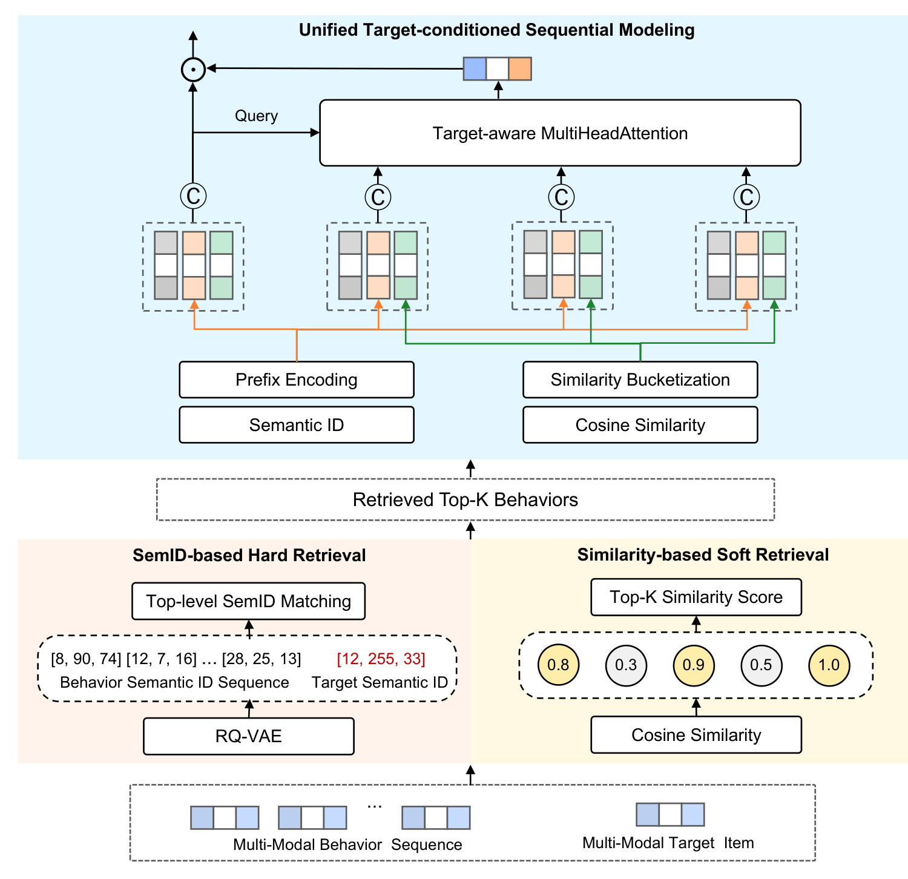
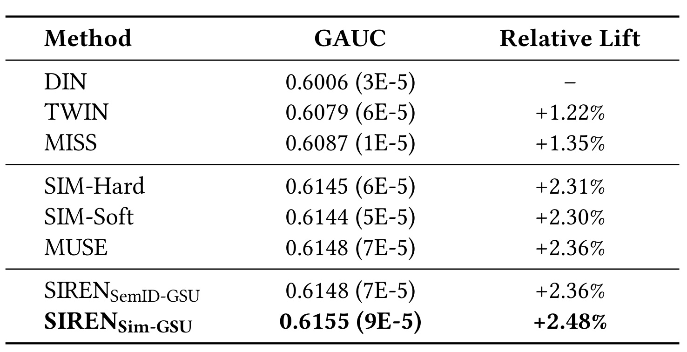
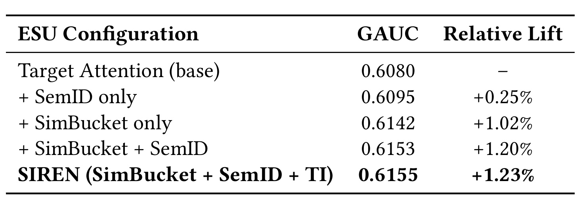
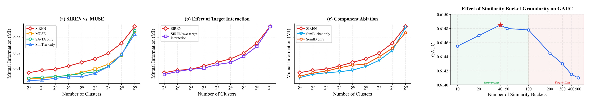
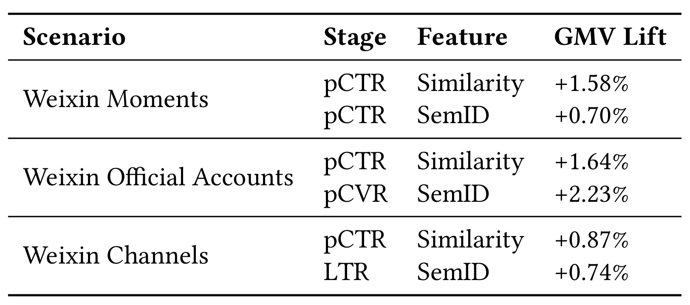
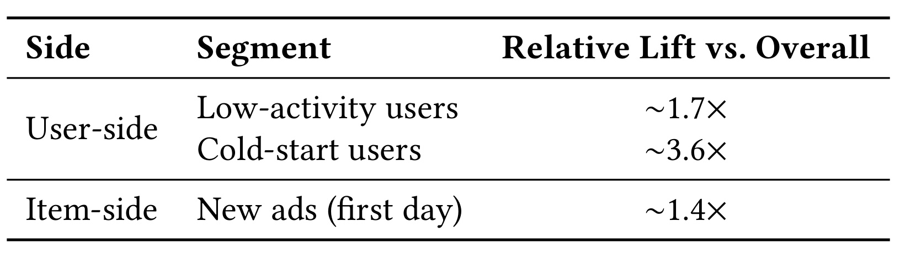

SIREN 这篇论文讨论的是工业推荐系统里一个很实际的问题：用户长期行为序列很长，广告或内容 item 又有图文多模态语义，模型既要利用多年级别的历史兴趣，又不能把多模态 embedding 当成一个晚期辅助分支粗糙拼上去。论文标题为 SIREN: Unified Multi-Granularity Semantic Interaction for Multi-Modal Lifelong User Interest Modeling，一作主机构是 Tencent Inc.，合作机构包括厦门大学信息学院。论文入口：arXiv:2605.25726。本轮核验 arXiv 元信息、PDF 首页与 GitHub 仓库搜索，未发现官方项目页或开源仓库；PDF 首页也没有给出独立代码链接。
这篇工作属于推荐算法和多模态长期兴趣建模方向。它不是提出一个纯离线 benchmark 模型，而是围绕腾讯广告系统中常见的 GSU-ESU 两阶段长序列推荐链路展开：GSU 先从超长历史行为中检索与目标 item 相关的一小段，ESU 再做精排侧的目标感知兴趣建模。SIREN 的核心改动是把多模态语义信号拆成两种粒度：相似度桶提供目标相关的粗粒度 relevance，Semantic ID 提供 item 级的细粒度语义和协同异质性，再把它们在 item 表示和 target-conditioned attention 里早融合，而不是等到行为序列和多模态序列各自聚合之后再 late fusion。
1. 背景和问题
工业广告、信息流和电商推荐都在依赖更长的用户行为历史。短序列模型只看最近几十次点击或曝光，容易抓住即时兴趣，却会丢掉用户长期稳定偏好、跨场景迁移偏好和低频但高价值的兴趣线索。长期兴趣建模的难点在于序列长度和在线延迟之间的冲突：一个活跃用户可能在多个域里积累成千上万条历史行为，直接把这些行为全量送进 Transformer 或 target attention，不仅显存和计算成本高，线上服务也难以满足广告排序链路的毫秒级约束。因此工业系统常用两阶段范式，先用 General Search Unit 从全量行为里取出与目标 item 相关的 top-K 行为，再用 Exact Search Unit 做更细的兴趣抽取和点击率、转化率预测。
过去这条路线主要基于 ID 和类别等协同特征。ID 信号贴近用户反馈，能很好地表达“相似用户对相似 item 的行为模式”，但对长尾 item、新广告、新内容和跨域 item 的泛化有限。多模态大模型和预训练图文表示让 item 有了更丰富的内容语义，图像、文本、标题、商品素材都能被编码到连续 embedding 中，这天然适合弥补冷启动和长尾问题。问题在于，多模态 embedding 主要学习内容相似性，而推荐系统的 ID embedding 和点击反馈空间学习的是协同相关性。两个空间并不天然对齐：视觉上相似的广告不一定带来相同点击概率，用户点击上相似的 item 也不一定在图文语义上接近。直接把多模态 embedding 拼到精排模型里，可能引入噪声；把多模态分支和行为 ID 分支分别建模后再融合，又会让语义信号错过 item 级和 target 级的细粒度交互时机。
论文把已有多模态长期兴趣方法概括为 separate modeling paradigm。典型做法是让 ID-based behavior sequence 走一条长序列兴趣建模链路，让 multi-modal sequence 走另一条相似度聚合或语义注意力链路，最后在序列聚合之后做 late fusion。这种策略工程上容易接入，因为它不会大幅改变已有 ID 精排主干；但它的代价也清楚：多模态信号只在注意力权重调制或序列级表征补充中出现，无法在每个历史行为 item 的表示形成阶段就与 ID 特征共同学习，也不能让行为之间的序列依赖被语义粒度重新塑形。

Figure 1 把这个差异画得很直观。左侧 separate modeling 中，行为序列和多模态序列分开处理，一个分支做 sequential modeling，另一个分支做 similarity aggregation，之后再 late fusion。这样的结构意味着多模态信息在进入主序列模型时已经被压缩成较粗的全局信号。右侧 SIREN 的 unified modeling 则把 behavior sequence 和 multi-modal sequence 放到同一个 sequential modeling 框架里，并且强调 early fusion。图中 early fusion 不只是把两个 embedding 拼起来，而是在每个被检索到的历史行为位置同时放入 ID、SemID、相似度桶等信号，让 target-aware attention 在计算行为权重和行为表示时都能看到多模态语义。这个图适合放在背景章，因为它说明论文的目标不是“再加一个多模态特征”，而是改变多模态信号进入长序列兴趣建模的位置。
SIREN 要解决的第二个问题是 target-behavior similarity 的粗粒度性。很多多模态推荐方法会计算历史行为 item 和目标 item 的余弦相似度，或把相似度离散成 bucket，再把它用作目标感知特征。这个思路合理，因为广告排序最终关注的是“当前目标广告和用户过去看过的内容是否相关”。但相似度是一个标量，最多反映两个 item 在内容空间里的距离。它不能保留 item 的语义层级，也不能解释同样相似的 item 在协同反馈空间里为什么产生不同点击概率。比如两个广告素材都和目标广告在视觉上接近，一个可能对应高购买意图，另一个可能只是风格相近但用户反馈弱；这类差异被单一 similarity bucket 压平之后，ESU 很难继续区分。

Figure 2 是论文引出 SemID 的关键证据。上方子图先给出不同 similarity bucket 的平均 CTR，越靠右表示目标 item 与历史行为 item 的多模态相似度越高。下方三个子图进一步在 bucket [0.2, 0.3)、[0.5, 0.6)、[0.9, 1.0] 内按 SemID-pair group 展开 CTR。可以看到，即使落在同一个相似度桶，CTR 也不是围绕均值轻微波动，而是有明显的组间差异。论文在正文中给出三个范围：bucket [0.2, 0.3) 的 CTR 大约从 0.815 到 0.949，bucket [0.5, 0.6) 从 0.755 到 0.956，bucket [0.9, 1.0] 甚至从 0.735 到 1.000。越高相似度区域内部反而可能有更强的反馈异质性。这说明“内容很像”不等于“用户会以相同方式反馈”，也说明只靠相似度桶会把协同结构中重要的细粒度差异压掉。
这篇论文因此把问题定义得比较清楚：在两阶段长期兴趣建模中，SIREN 既要保留 GSU 的在线可服务性，又要让多模态语义在 ESU 的 item-level interaction 中真正参与建模。它不是否定相似度检索，相反，论文保留 similarity-based soft retrieval 作为高效果选择；但它也提出 SemID-based hard retrieval，用离散语义 ID 替代在线 dense embedding 相似度计算，降低服务成本。同时在 ESU 里，SIREN 不把 SemID 和 similarity bucket 看成二选一，而是把二者作为互补的多粒度侧信息：similarity bucket 描述“这个行为和目标有多接近”，SemID 描述“这个行为在语义和协同结构中属于哪类对象”。两者进入同一个 target-conditioned backbone 后，模型才能同时回答“相关程度”和“相关对象类型”两个问题。
从推荐系统角度看，SIREN 的价值主要在三个场景。第一是长尾和冷启动 item，ID 信号稀疏时，多模态语义提供跨 item 泛化。第二是用户历史很长但线上只允许取 top-K 的场景，GSU 检索质量会直接影响 ESU 能看到什么行为。第三是多业务场景共用长期行为序列时，广告、内容、频道等域之间的 ID 体系可能不同，多模态语义能提供跨域桥梁。论文后面的线上实验也围绕这些场景验证，尤其强调低活用户、冷启动用户和新广告上的 lift 高于整体平均。
还需要注意，SIREN 的背景不是一般意义上的“多模态推荐能不能提升效果”，而是更具体的“多模态信号在长期兴趣链路里应该在哪一层和协同信号交互”。如果只把图文 embedding 放在召回端，精排 ESU 可能仍然只看到 ID 行为，无法解释相似 item 内部的点击差异；如果只把图文 embedding 放在精排尾部，GSU 检索出的行为集合可能已经错过真正语义相关的长期行为；如果只用一个相似度标量，模型又会把内容距离相近的行为看得过于同质。SIREN 的问题定义因此有较强的工程约束：它要在不推翻 GSU-ESU 主链路的前提下，让多模态语义同时影响检索、行为表示和目标条件注意力。这个约束也解释了为什么论文选择离散 SemID 和 bucket，而不是直接把大模型图文 embedding 全量塞进在线 Transformer。
2. 方法
2.1 Preliminaries：两阶段长期兴趣建模问题设置
论文在方法前先给出长期兴趣建模的标准设置。对于一次 CTR 预测请求，系统有上下文信息 $c$、用户 $u$、目标 item $v_t$，以及用户全量历史行为序列 $H=(b_1,\ldots,b_N)$。这里的 $N$ 可以很大，在腾讯广告生产系统中，论文后文提到跨域行为最多覆盖两年、每个域最大长度 4000。因此模型不会直接对 $H$ 全量建模，而是遵循工业两阶段范式。GSU 从全量行为中检索一个更短的目标相关子序列 $H_t=(b_1,\ldots,b_L)$，其中 $L \ll N$；ESU 在 $H_t$ 上做精细兴趣建模，并输出点击概率。
论文的预测目标可以写成：
符号解释：$\hat{y}_t$ 是模型预测的目标 item 被点击概率，$y_t\in{0,1}$ 是真实点击标签，$H_t$ 是 GSU 检索后的目标相关行为子序列，$v_t$ 是当前待排序或待预估的目标 item，$u$ 是用户侧特征，$c$ 是上下文特征。训练时论文使用二分类点击标签，目标函数在文字中表述为 binary cross-entropy，虽然没有单独给出 BCE 公式，但可以理解为标准 CTR 模型优化目标。这个设置强调了 SIREN 的两个接口：GSU 决定 $H_t$ 的内容，ESU 决定如何把 $H_t$ 与 $v_t$、$u$、$c$ 融合成预测。
每个历史 item $b_i$ 被表示为 $x_i=(z_i^{id}, e_i^{mm})$。其中 $z_i^{id}$ 是 ID-based categorical features，例如 item ID、category 等协同侧特征；$e_i^{mm}\in \mathbb{R}^d$ 是预训练多模态 embedding。论文特别说明这些多模态 embedding 是通过大规模用户交互对齐过的，但它们本质上仍承载内容语义。SIREN 的方法设计就围绕这两类信号如何在 GSU 和 ESU 中连接展开：ID 特征负责贴近推荐反馈，多模态特征负责泛化和冷启动，SemID 与 similarity bucket 则是把连续多模态信号转成推荐主干能用的离散侧信息。
2.2 Overall Architecture：从 GSU 到 ESU 的统一早融合
SIREN 的整体结构可以分成两个阶段。第一阶段是 GSU，负责从全量行为序列里取出 target-relevant behaviors。这里论文提供两种可替代检索策略：similarity-based soft retrieval 用 dense multi-modal embedding 的余弦相似度取 top-K，效果好但在线计算和索引成本高；SemID-based hard retrieval 用离散 Semantic ID 的顶层 code 查倒排索引，效率好、服务成本低。第二阶段是 ESU，负责在检索出的 top-K 行为上做统一 target-conditioned sequential modeling。ESU 不再把多模态分支当成晚期外接模块，而是把 ID embedding、prefix-encoded SemID、target-aware similarity bucket 一起放进行为表示和注意力计算。

Figure 3 是理解方法的主图。底部是 multi-modal behavior sequence 和 multi-modal target item。左下分支经过 RQ-VAE 得到 behavior semantic ID sequence 和 target semantic ID，再通过 top-level SemID matching 做 hard retrieval；右下分支直接计算历史行为与目标 item 的 cosine similarity，再取 top-K similarity score 做 soft retrieval。两条 GSU 路径都会输出 retrieved top-K behaviors。进入 ESU 后，图中绿色线表示 similarity bucketization，橙色线表示 Semantic ID 的 prefix encoding，两类信号和行为 ID 表示一起进入统一的 target-aware MultiHeadAttention。上方 query 和逐元素交互符号表示目标 item 会同时影响注意力和最终兴趣表示。这个图里的关键不是“多了两个特征”，而是这些特征出现在行为聚合之前，能够改变每个行为位置的表示和权重。
从信息流看，SIREN 把多模态信号拆成三种用途。第一种用途是检索，GSU 需要用多模态信号从长历史中找出可能相关的行为。第二种用途是表示，SemID 通过离散 prefix embedding 成为 item representation 的一部分，和 ID embedding 同层融合。第三种用途是目标条件相关性，similarity bucket embedding 在 attention 输入中告诉模型行为 item 与目标 item 的粗粒度接近程度。这样设计后，多模态信息不会只在最终 MLP 前拼接，而是贯穿“取哪些行为、每个行为怎样表示、每个行为对当前目标有多重要”三个环节。
这三种用途之间不是线性串联，而是围绕同一个目标 item 形成闭环。一次请求到来后，目标 item 先提供多模态 embedding 和 SemID。GSU 的 soft path 用目标 embedding 与历史行为 embedding 比相似度，hard path 用目标顶层 SemID 到用户历史倒排里查同簇行为。被选出的 top-K 行为进入 ESU 后，每个行为再携带自己的 ID embedding、SemID prefix embedding，以及相对目标的 similarity bucket embedding。也就是说，目标 item 在检索阶段决定“候选行为集合”，在 attention 阶段决定“候选行为权重”，在最终交互阶段决定“抽取出的兴趣是否与目标兼容”。这种多次目标条件化，是 SIREN 区别于简单多模态特征拼接的核心。
从模型容量分配看，SIREN 也比较克制。它没有为图像、文本和 ID 各自建大分支再 cross attention，而是把多模态大模型的连续表示先离散为 SemID，再通过推荐系统熟悉的 embedding lookup 进入主干。这样做牺牲了一部分连续语义空间的细节，但换来三个好处：稀疏 embedding 便于大规模训练，离散 code 便于在线倒排索引，prefix token 便于表达层级语义。工业系统里，能否把特征稳定地生产、更新、缓存和线上服务，常常比模型形式是否最华丽更重要。SIREN 的架构选择正是围绕这几个约束展开。
2.3 Multi-modal Feature Construction：SemID 与 similarity bucket
SIREN 的多模态特征构造有两条线。第一条是 Semantic ID。连续多模态 embedding 不适合直接接入大规模 ID-centric 推荐系统，原因包括存储成本、在线传输成本、分布不稳定，以及和稀疏 ID embedding 空间的对齐问题。论文采用 RQ-VAE 把每个 item 的多模态 embedding 量化成一个层级 code 序列：
符号解释：$\mathrm{SemID}_i$ 是 item $i$ 的语义 ID 序列，$c_i^{(m)}$ 是第 $m$ 个量化层的 code，$M$ 是量化层数。RQ-VAE 的残差量化过程会让前面的 code 更粗，后面的 code 更细，因此这个序列天然形成 coarse-to-fine 的语义表示。与直接使用一个离散 item token 不同，层级 SemID 能同时表达大类语义和细节差异。对于推荐系统来说，顶层 code 可以用于高效检索，完整前缀则可以用于 ESU 的细粒度表示。
论文没有把每一层 code 独立 embedding 后简单相加，而是采用 prefix encoding。给定 SemID，构造前缀 token 集合：
符号解释：$P_i$ 是 item $i$ 的前缀集合，$K\le M$ 是最大前缀深度。第一个 token 表示最粗语义，第二个 token 表示“第一层和第二层共同确定的更细语义”，依次递进。这样做的好处是避免把不同层 code 看成彼此独立的类别，因为一个二级 code 的含义通常依赖它所在的一级语义簇。prefix token 把“路径”本身作为可学习对象，更接近树状语义分层。
每个 prefix token 通过共享查表得到 embedding，并拼接成最终语义表示：
符号解释：$E_{prefix}$ 是可学习的 prefix embedding 表，$p$ 是某个前缀 token，$e_i^{sem}$ 是 item $i$ 的 SemID 表示。这里用 Concat 而不是平均，意味着不同层级前缀都有独立维度进入后续模型。模型可以自己学习粗粒度语义和细粒度语义在不同目标场景中的权重。训练时这些 prefix embedding 会随 CTR 目标一起更新，因而不只是 RQ-VAE 输出的静态语义标签，而是进入推荐反馈空间后被重新校准的离散语义表示。
prefix encoding 的另一个作用是缓解语义 ID 稀疏问题。假设只把完整 SemID 序列当成一个组合类别，那么长尾 item 很容易落到样本很少的离散 token 上，embedding 学不稳；假设只使用顶层 code，又会把过多 item 混在一个粗簇里，丢掉 Figure 2 所展示的同桶异质性。prefix 方案介于二者之间：顶层前缀提供共享统计量，较深前缀提供细分能力。一个冷启动或低频 item 即使完整路径样本少，也可以通过顶层和中层前缀借到同簇 item 的反馈；一个高频 item 则可以通过更深前缀保留自己的细粒度差别。这个设计和推荐系统常见的多粒度类别特征相似，只是类别来源从人工 taxonomy 换成了多模态量化语义。
SemID 还让多模态语义从“连续相似度”变成“可组合的离散身份”。连续 embedding 的相似度只在目标 item 给定时才有意义，而 SemID 是 item 自身的稳定属性，可以被缓存、索引和作为训练特征反复使用。这对长期兴趣特别重要，因为用户历史行为是离线沉淀的，大量历史 item 不可能在每次请求时重新编码。只要 item 的 SemID 已经写入特征库，线上就能在毫秒级链路中使用它。论文没有展开 SemID 更新周期，但从工程上看，新增广告或内容上线后必须及时生成多模态 embedding、量化成 SemID、写入倒排和特征服务，否则 hard retrieval 和 ESU 表示都会缺失这条语义信号。
第二条线是 target-aware similarity bucket。SemID 描述 item 自身的层级语义，但 CTR 预测还需要显式知道历史行为与目标 item 的关系。论文先计算行为 item $b_i$ 和目标 item $v_t$ 的多模态余弦相似度：
符号解释：$e_i^{mm}$ 是历史行为 item 的多模态 embedding，$e_t^{mm}$ 是目标 item 的多模态 embedding，$s_{i,t}$ 是二者内容空间中的相似度。这个值是 target-conditioned 的，因为同一个历史行为面对不同目标 item 会有不同相似度。它直接回答“这个历史行为和当前目标广告在图文内容上有多近”，适合作为 attention 的目标相关信号。
连续相似度随后被离散到 bucket：
符号解释：$q_{i,t}$ 是 bucket index，$B$ 是桶数，$s_{min}$ 和 $s_{max}$ 是从数据统计中估计出的有效相似度范围，超出范围的值会被截断到边界桶。离散化有两个作用。第一，它把连续相似度转换成推荐模型更稳定的稀疏特征，避免在线分布漂移导致连续值尺度不稳。第二，它让模型能够对不同相似度区间学习非线性响应，而不是假设相似度越高点击概率就线性越高。
每个 bucket index 再映射到 embedding：
符号解释：$\mathrm{Emb}{sim}$ 是可学习 similarity bucket embedding 表，$e$ 是行为 $i$ 相对目标 $t$ 的相似度桶表示。注意这个 embedding 是行为和目标成对定义的，不是 item 固定属性。它在 ESU attention 中与行为表示、目标表示一起输入，作用类似一个粗粒度 relevance gate。它和 SemID 的互补性在这里很清楚：SemID 是 target-independent 的 item 语义结构，similarity bucket 是 target-dependent 的内容接近程度。}^{Sim
离散 bucket 的设计还隐含了一个推荐模型里的常见判断：相似度数值本身不一定线性可用。多模态 embedding 经过预训练和对齐后，余弦相似度的绝对值会受模型、样本分布和业务域影响。0.7 在一个域里可能表示很强相关，在另一个域里可能只是常见背景相似。把相似度映射成 bucket embedding 后，模型可以学习每个区间对点击率的非线性贡献，也可以在训练中自动校准某些高相似区间并不一定高点击的现象。Figure 2 中高相似区间仍然存在大幅 CTR 波动，正说明 bucket 只适合做粗 relevance，而不能替代更细的语义身份。
需要区分的是，SemID 和 SimBucket 的粒度不同，进入模型的位置也不同。SemID 的 prefix embedding 拼进 $h_i$，因此它会参与 value 表示，被加权求和后进入用户兴趣向量；SimBucket 拼到 attention 输入，主要影响 $\alpha_i$，决定当前目标下每条历史行为的权重。前者更像“行为是什么”，后者更像“行为与目标有多相关”。如果把二者都当成普通 side feature 混在同一个 MLP 前端，可能无法得到 Table 2 中的互补增益。SIREN 的模块位置选择，是它方法章里最值得复现时保持一致的部分。
2.4 General Search Unit：soft retrieval 和 hard retrieval
GSU 的任务是从超长历史行为集合 $\mathcal{B}$ 中检索短序列。SIREN 首先保留 similarity-based soft retrieval。给定目标 item，多模态 embedding 可以直接用于全序列相似度匹配：
符号解释：$\mathcal{S}_{sim}$ 是按多模态余弦相似度检索出的历史行为集合，$b_i$ 遍历用户全量历史行为，$e_t^{mm}$ 是目标 item 的 embedding。这个策略的优势是直观且效果强，尤其当目标 item 是新广告或长尾内容时，ID 匹配可能找不到足够行为，而内容相似性仍能召回视觉或文本相关的历史兴趣。论文默认的 SIREN 离线主结果使用 similarity-based soft retrieval，因此它是效果上限较高的选择。
但 soft retrieval 在工业服务中有明显成本。它需要为用户历史中每个 item 保留高维多模态 embedding，在线请求时还要对目标 item 与全量历史做相似度计算或维护复杂的 embedding index。对于广告系统中跨域两年历史、每域数千行为的设置，这会带来存储、带宽和延迟压力。更重要的是，精排请求的目标 item 是动态的，目标变化时历史行为的相似度也变化，预计算空间有限。论文因此提出第二种检索方式：SemID-based hard retrieval。
SemID hard retrieval 使用目标 item 的顶层语义 code 作为倒排索引 key：
符号解释：$c_i^{(1)}$ 是历史行为 item 的顶层 SemID code，$c_t^{(1)}$ 是目标 item 的顶层 SemID code，$\mathcal{S}_{SemID}$ 是顶层语义 code 相同的历史行为集合。这个设计把 dense similarity computation 替换为倒排查找，理论复杂度从 $O(|\mathcal{B}|\cdot d)$ 降到近似常数级查表。它也不需要在线传输高维 embedding，只要维护每个 item 的离散 code 和用户历史倒排结构即可。
hard retrieval 的潜在风险是过硬匹配会牺牲召回质量。顶层 SemID code 相同只能说明行为和目标处在同一粗语义簇，不能保证它们在连续内容空间中最接近，也可能漏掉跨簇但相关的 item。SIREN 对这个问题的处理方式不是把 hard retrieval 说成绝对替代 soft retrieval，而是把它定位为 efficiency-performance trade-off。离线 Table 1 显示 SIREN 的 SemID-GSU 版本 GAUC 与 MUSE 持平，但低于 similarity-GSU 的 full SIREN；线上部分则报告 SemID hard retrieval 在延迟和存储成本上降低超过 90%，且性能退化很小。这种表述符合工业论文的真实取舍：软检索适合追求效果上限，硬检索适合大规模全量部署和成本敏感链路。
训练和推理的差异也需要注意。训练时模型可以在样本构造阶段计算或缓存相似度、SemID 和检索结果，成本相对可控；推理时每次请求都要根据当前目标 item 快速取 top-K 行为。soft retrieval 推理依赖高维向量匹配，适合有强索引和预算的场景；hard retrieval 推理依赖离散倒排，适合广告系统中请求量巨大、用户历史很长的场景。SIREN 的方法贡献之一，就是让 SemID 不只作为 ESU 侧信息，也能作为 GSU 检索 key，从而在同一个语义离散化结果上复用训练表示和服务索引。
如果把 GSU 看成一个候选行为召回器，soft retrieval 和 hard retrieval 的误差类型也不同。soft retrieval 的误差主要来自多模态 embedding 的语义偏差，例如视觉相似但用户意图不同，或者文本素材相似但商品类目不同；hard retrieval 的误差主要来自量化边界，例如两个相关 item 被分到不同顶层 code，或者一个顶层 code 过大导致召回过宽。SIREN 没有在主文里给出混合召回策略，但实际系统很可能需要同时保留多路召回、去重和截断。论文的贡献在于证明 SemID 可以成为一条低成本强召回路，而不是必须完全替代相似度检索。
从索引实现推断，SemID hard retrieval 可以把用户历史按顶层 SemID code 建倒排表。请求时目标 item 的 $c_t^{(1)}$ 作为 key，直接取同 code 下的历史行为，再按时间、新鲜度或其他业务规则截断到 top-K。这个过程不需要访问高维 embedding，也不需要逐条计算余弦相似度。代价是顶层 code 的粒度必须被控制得足够好：太粗会返回太多行为，ESU 仍要处理大量噪声；太细会漏召回，冷启动 item 也可能找不到足够同簇历史。论文选择顶层 code 而不是完整 SemID 做检索，说明它更看重召回覆盖和服务稳定性，细粒度区分则留给 ESU 的 prefix encoding。
2.5 Exact Search Unit：统一表示、目标感知注意力和目标条件交互
ESU 是 SIREN 真正解决 late fusion 问题的地方。传统做法可能先用 ID 特征对 top-K 行为做 target attention，再把多模态相似度或语义分支的结果在后面拼接。SIREN 改成先构造统一 item representation。对于检索出的每个行为 $b_i$，表示为：
符号解释：$e_i^{id}$ 是 ID-based categorical features 的 embedding 拼接，$e_i^{sem}$ 是前面由 SemID prefix encoding 得到的语义表示，$h_i$ 是行为 item 的统一表示。目标 item $v_t$ 也用相同形式构造 $h_t=\mathrm{Concat}(e_t^{id}, e_t^{sem})$。这个公式看起来简单，但它改变了多模态语义进入模型的位置：SemID 不再是聚合后的辅助向量，而是在每个行为 item 的表示里和 ID 特征并列存在。后续 attention 看到的是一个已经包含协同和语义两种信息的行为序列。
在统一表示基础上，ESU 用 target-aware sequence encoder 抽取用户兴趣：
符号解释：$f(\cdot)$ 是目标感知序列建模函数，输入为检索后的 $L$ 个行为表示和目标 item 表示，输出 $u_t$ 是面向当前目标的用户兴趣向量。论文将 $f$ 实例化为 multi-head target attention。这里的“target-aware”有两层含义：目标 item 决定哪些历史行为更重要，也决定多模态相似度桶如何被解释。比如同一个历史点击行为面对一个相似广告时应该权重大，面对无关广告时应该权重小。
具体 attention 写成：
符号解释：$\oplus$ 表示向量拼接，$e_{i,t}^{Sim}$ 是行为和目标的相似度桶 embedding，$e_t^{Sim}$ 是与目标 item 关联的可学习 embedding，$\alpha_i$ 是行为 $b_i$ 的 attention weight，$u_t$ 是加权求和后的目标条件用户兴趣。这个公式有一个值得细读的细节：相似度桶参与 attention 权重计算，但求和的 value 仍然是 $h_i$。也就是说，SimBucket 主要告诉模型“该看哪些行为”，而 $h_i$ 本身已经包含 ID 和 SemID，告诉模型“被看的行为是什么”。这让粗粒度 relevance 和细粒度 semantic identity 在同一个 attention 层协同工作。
论文强调，SIREN 的所有特征类型都在 sequence aggregation 之前整合。因此这些信号不仅调节 $\alpha_i$，也影响行为表示学习。SemID 出现在 $h_i$ 中，会随 attention 的 value 路径进入最终兴趣表示；similarity bucket 出现在 attention 输入中，会改变不同历史行为对 $u_t$ 的贡献。这和 late fusion 的差别很大。late fusion 即使最后把多模态向量拼上，也无法回头改变序列内部每个行为的权重和表示；SIREN 则让语义和协同信号在序列建模过程中共同塑造用户兴趣。
这里还可以从梯度路径理解早融合的意义。训练时点击标签的损失会通过最终预测网络回传到 $\tilde{u}_t$，再回传到 $u_t$、attention 权重和每个 $h_i$。因为 $h_i$ 中含有 SemID prefix embedding，模型会学习哪些语义前缀在某些目标条件下更容易贡献点击；因为 attention 输入中含有 SimBucket embedding，模型会学习不同相似度区间应该如何改变历史行为权重。late fusion 分支通常只能在聚合后收到较粗的梯度信号，难以告诉某个历史行为位置的某个语义前缀应该被加强还是削弱。SIREN 的 early fusion 让多模态侧信息在更靠近行为粒度的位置接受监督。
这个 attention 公式也解释了为什么 SimBucket alone 的消融效果强。目标相关性是 CTR 预估里非常直接的信号，尤其在广告场景中，用户过去点击过与当前广告内容接近的素材，往往能提升当前点击概率。但 Figure 2 和信息增益分析说明，相关性强不等于反馈同质。因此 SemID 的作用是把高相关行为继续拆成不同语义和协同类型。一个高相似行为如果 SemID prefix 指向用户真正偏好的商品或内容簇，就应该被更有效地利用；如果只是素材风格相似但历史反馈弱，则模型可以通过 SemID 和 ID 特征降低它的影响。
为了进一步对齐抽取出的兴趣和目标 item，SIREN 在表示空间加入轻量逐元素交互：
符号解释：$\odot$ 是逐元素乘法，$u_t$ 是从历史行为中抽取出的目标条件兴趣，$h_t$ 是目标 item 的统一表示，$\tilde{u}_t$ 是经过 target-conditioned interaction 后的兴趣表示。逐元素乘的直觉是保留兴趣向量和目标向量在同一维度上同时强的部分，削弱与目标不匹配的兴趣维度。它比再加一个复杂 cross network 更轻，但能显式建模“用户兴趣与目标表示是否兼容”。实验中的 Figure 4(b) 显示，加入 target interaction 后表示与点击标签的互信息更高，说明这个简单模块确实增强了表示判别性。
最终预测为：
符号解释：$g$ 是最终预测网络，$[\tilde{u}_t, h_t, u, c]$ 是目标条件兴趣、目标 item 表示、用户特征和上下文特征的拼接，$\sigma$ 是 sigmoid，输出点击概率。这个输出层沿用 CTR 预估常见结构，SIREN 的创新主要发生在输入它之前的长期兴趣抽取链路。训练时 $\hat{y}_t$ 与真实点击标签 $y_t$ 通过 BCE 优化；推理时该概率进入 pCTR、pCVR 或 LTR 等广告排序阶段。
在训练阶段，SIREN 的 dense 参数和 sparse 参数使用不同优化器，这也符合公式里的参数类型差异。MLP、attention 和部分连续投影属于 dense 参数，使用 AdamW；ID embedding、SemID prefix embedding、bucket embedding 等稀疏查表参数使用 SparseAdam。这样做能避免稀疏 embedding 在大规模推荐训练中被 dense optimizer 低效更新。论文只训练一个 epoch，说明数据规模足够大，且工业推荐模型常常更关注快速迭代和线上可部署性，而不是在一个固定数据集上多轮过拟合。
在推理阶段，ESU 只处理 GSU 选出的 top-50 行为，因此复杂度主要与 $L$ 而非全量历史 $N$ 相关。每个行为需要取 ID embedding、SemID prefix embedding，并根据目标 item 计算或读取 similarity bucket。soft retrieval 版本已经在 GSU 计算过相似度，ESU 可以复用；hard retrieval 版本仍然可以在 top-K 行为上计算相似度桶，因为 top-K 长度很短，成本远低于全序列 dense matching。这个细节让 SemID hard retrieval 和 SimBucket ESU 并不矛盾：hard retrieval 避免的是全历史向量检索成本，ESU 中仍可对少量候选行为使用目标相似度侧信息。
2.6 Section 5.5 中的信息增益分析如何反哺方法理解
虽然信息增益公式出现在实验分析章节，但它对理解方法必要性很重要。论文用分组变量 $G$ 对点击标签 $Y$ 的信息增益衡量不同分组方式的判别能力：
符号解释：$H(Y)$ 是点击标签的不确定性，$H(Y\mid G)$ 是知道分组变量之后剩余的不确定性，$I(Y;G)$ 越大，说明分组越能解释点击差异。论文报告 Semantic-ID grouping 的 $I(Y;SID)=0.0195$，明显高于 similarity-bucket grouping 的 $I(Y;Sim)=0.0056$。这说明 SemID 捕获的分组信息比单纯相似度桶更贴近点击反馈。也就是说，SemID 不是为了让模型看起来更“语义化”而加的装饰特征，而是能在统计上减少点击标签不确定性的细粒度结构。
把这个结果和前面的公式连起来，SIREN 的方法闭环就比较完整。RQ-VAE 和 prefix encoding 把连续多模态 embedding 变成离散层级语义，解决与 ID-centric 系统对接的问题；similarity bucket 把目标相关性离散成可学习表示，解决 attention 需要 target-aware relevance 的问题；GSU 同时提供 soft 和 hard 检索，解决效果和成本取舍；ESU 在 item level 早融合 ID、SemID 和 SimBucket，解决 late fusion 无法细粒度交互的问题；target-conditioned interaction 再把用户兴趣和目标 item 做显式兼容性对齐。每个模块的输入、输出和下一步连接都很清楚，论文真正的贡献是这套链路的统一，而不是某一个公式本身很复杂。
从复现角度看，有几个细节会影响效果。第一，SemID 的质量取决于多模态 embedding 和 RQ-VAE 量化，若语义簇与推荐反馈不相关，hard retrieval 和 prefix encoding 都会受损。第二，bucket 的边界 $s_{min},s_{max}$ 和桶数 $B$ 需要基于数据统计调参，Figure 4 也说明桶数不是越大越好。第三，ESU 中 SimBucket 出现在 attention 输入而不是直接拼到 value 表示里，这种位置选择可能影响模型到底把相似度当作权重信号还是内容信号。第四，线上 hard retrieval 的倒排索引如何更新、如何处理 SemID 热点簇、如何截断过长候选，论文没有展开，这是工业落地时需要额外验证的部分。
还可以把 SIREN 的失败条件按模块拆开看。若 GSU soft retrieval 依赖的多模态 embedding 只捕捉素材风格而不捕捉用户意图，召回出的 top-K 行为会视觉相近但反馈无关，ESU 再强也只能在噪声候选里重排。若 SemID hard retrieval 的顶层 code 与真实广告类目或消费意图错位，倒排会把不该混在一起的行为放进同一组，或者把本来相关的行为拆散。若 similarity bucket 的统计范围没有随业务分布更新，线上请求中的相似度会集中落到少数边界桶，bucket embedding 的区分能力会下降。若 ESU 的目标交互只在尾部做一次而没有让 SemID 和 SimBucket 参与 attention，模型会退化回接近 late fusion 的结构。也就是说，SIREN 的有效性依赖“语义量化、目标相关性、行为检索、早融合注意力”四个环节同时工作，任一环节漂移都会削弱最终 GAUC 和线上 GMV。
这一点也说明，SIREN 更像一个系统性特征建模方案，而不是可以孤立移植的单层网络。把它接到新业务时，先要检查 item 多模态素材是否足够稳定，广告或内容是否能及时生成 SemID，历史行为表是否能按 SemID 建索引，精排模型是否能承受 prefix embedding 带来的稀疏参数增长，线上特征服务是否能在目标 item 给定后快速产出 similarity bucket。只有这些工程前提成立，论文公式中的 $h_i$、$e_{i,t}^{Sim}$、$\alpha_i$ 和 $\tilde{u}_t$ 才能真实落到服务链路里。否则，离线复现可能只验证了模型结构，无法验证论文最强调的 lifelong user interest modeling 和 industrial serving 价值。
3. 实验结果
3.1 Experimental Setup：Taobao-MM、baseline 和训练设置
论文离线实验使用 Taobao-MM 数据集，这是一个面向多模态长期用户行为建模的公开 benchmark，来自淘宝展示广告真实流量。数据集规模很大，包含 9900 万交互样本、879 万用户、3540 万 item，每个用户最多有 1000 条历史行为。每个 item 同时有 ID 类特征和 128 维预训练多模态 embedding，点击标签是二分类。这个设置和 SIREN 的目标匹配：既有长序列，又有多模态 item 表示，也有广告 CTR 预测目标。
baseline 覆盖了短序列、两阶段长序列和多模态长序列方法。DIN 只看最近 50 个行为，没有 GSU，代表短期兴趣模型。SIM-Hard 用目标 item 类别精确匹配做 GSU，SIM-Soft 用 item embedding 内积相似度做 GSU。TWIN 是两阶段兴趣网络，强调 GSU 和 ESU 采用一致的 target attention。MISS 是引入多模态 GSU 的检索方法。MUSE 是当前强多模态 lifelong interest baseline，把多模态信号接入 GSU 和 ESU。SIREN 有两个版本：SIREN-SemID-GSU 使用 SemID hard retrieval，SIREN-Sim-GSU 使用 similarity soft retrieval，ESU 保持一致。
实现细节上，所有模型训练一个 epoch；DIN 用最近 50 个行为，两阶段模型都从 lifelong sequence 中检索 top-50 行为进入 ESU。优化器对 dense 参数使用 AdamW，学习率 $2\times10^{-4}$；对 sparse embedding 参数使用 SparseAdam，学习率 $2\times10^{-3}$；batch size 为 1000。主要离线指标是 GAUC。这个训练设置的含义是，论文关注的是相同预算下模型结构和特征融合方式的差异，而不是通过更长训练或更大模型堆效果。
3.2 Overall Performance：离线主结果

Table 1 给出主结果。DIN 的 GAUC 为 0.6006，是所有方法中最低的，说明只看短期行为不足以覆盖广告 CTR 预测中长期偏好。TWIN、MISS、SIM-Hard、SIM-Soft 都超过 DIN，证明两阶段长期行为建模确实有价值。SIM-Hard 和 SIM-Soft 分别达到 0.6145 和 0.6144，已经明显强于 TWIN 和 MISS，说明目标相关检索对长序列建模很关键。MUSE 达到 0.6148，是强多模态 baseline。
SIREN-SemID-GSU 同样达到 0.6148，相对 DIN 的 Relative Lift 为 +2.36%，与 MUSE 持平。这一行的意义不只是“效果没掉”，而是说明用顶层 SemID 倒排检索可以在不做 dense similarity soft retrieval 的情况下，保持与强 baseline 相当的离线效果。SIREN-Sim-GSU 达到最高 GAUC 0.6155，Relative Lift +2.48%，相对 MUSE 绝对提升约 0.0007，论文表述为 0.11% 左右的相对提升。对于大规模 CTR/广告排序系统，GAUC 绝对提升看起来小，但 0.1% 级别常常已经对应可观线上收益。这个表支持两个结论：统一早融合 ESU 有效果；SemID hard retrieval 是一个可行的效率替代。
不过主结果也需要冷静看。SIREN 相对 MUSE 的离线提升并不是数量级差异，说明 MUSE 的多模态搜索框架已经很强，SIREN 的优势更多来自细粒度融合和工业可服务性的组合。若只看 Taobao-MM 离线 GAUC，不能证明 SIREN 在所有数据集上都显著优于 MUSE；论文没有给出多公开数据集重复验证，也没有报告置信区间之外的显著性检验细节。真正增强说服力的是后面的消融、表示分析和腾讯线上 A/B test。
3.3 Ablation Study：SemID、SimBucket 和 TI 的贡献

Table 2 固定 GSU 为 similarity-based soft retrieval，只看 ESU 组件。base 是只有 ID representation 的 target attention，GAUC 为 0.6080。加入 SemID only 后到 0.6095，Relative Lift +0.25%；加入 SimBucket only 后到 0.6142，Relative Lift +1.02%；SimBucket + SemID 到 0.6153，Relative Lift +1.20%；完整 SIREN 再加入 target-conditioned interaction，GAUC 到 0.6155，Relative Lift +1.23%。
这个表非常重要，因为它把“粗粒度目标相关性”和“细粒度语义身份”拆开了。SimBucket 的单独增益更大，说明在 ESU 里直接告诉模型历史行为与目标 item 的相似度，是最强的目标条件信号。SemID only 的增益较小，但它和 SimBucket 组合后继续提升，说明 SemID 不是重复信息，而是在相似度之外补充了 item-level 语义结构和协同异质性。完整 SIREN 的 target-conditioned interaction 增益很小，从 0.6153 到 0.6155，但 Figure 4 的互信息分析显示它对表示判别性有更明显贡献。这提示线上系统中，一个模块的 AUC 增益和表示质量改善不一定线性对应。
消融结果也说明 SIREN 的收益主要来自 SimBucket 和 SemID 的联合早融合，而不是单个复杂模块。论文没有引入额外大模型推理，也没有把多模态 embedding 直接放入深层 cross attention，而是用离散化和 embedding lookup 把多模态语义转换成推荐系统友好的特征。这种设计适合工业场景，但也意味着效果上限受离散化质量约束。如果 RQ-VAE SemID 粒度不合适，或者相似度桶的统计边界在不同业务场景漂移，消融表中的互补性可能会下降。
3.4 Representation Discriminability 和 SemID 必要性
论文不仅报告 GAUC，还分析 learned user representation 是否更能区分点击和未点击。方法是取 Eq. (12) 得到的 $\tilde{u}_t$，由于它是连续高维向量，先用 K-means 聚类离散成 cluster assignment $Q(\tilde{u}_t)$，再计算 cluster assignment 与点击标签 $Y$ 的 mutual information。MI 越高，说明表示空间中的聚类越能解释点击差异，表示判别性越强。

Figure 4 左侧前三个子图分别回答三个问题。第一个子图比较 SIREN、MUSE、SA-TA only 和 SimTier only。随着聚类数从 $2^1$ 到 $2^9$ 增加，SIREN 的 MI 曲线整体高于其他方法，说明统一早融合得到的用户兴趣表示更能区分正负样本。第二个子图比较有无 target interaction，SIREN 全量模型在多数聚类数下高于去掉 target interaction 的版本，说明 Eq. (12) 的逐元素交互虽然 GAUC 增益不大，但确实让表示更贴近目标 item。第三个子图比较 SimBucket only、SemID only 和二者组合，组合曲线最高，支持两类多模态侧信息互补。
右侧子图讨论相似度桶粒度。MUSE 的 bucket 数从 10 增加到 40 时 GAUC 提升，40 附近达到峰值；继续增加到 100、200、300、400、500 后性能下降。这个结果很有启发，因为它否定了一个简单解释：如果 similarity bucket 不够细，那多分几个桶是否就能替代 SemID？图中答案是否定的。过细 bucket 可能带来稀疏、噪声和过拟合，而且 histogram-style similarity summarization 仍然丢掉 item identity 和时间结构。SemID 的作用不是把相似度划得更细，而是提供另一种 target-independent 的 item 语义和协同分组。
论文还用条件熵分析进一步支撑这一点。Semantic-ID grouping 的信息增益 $I(Y;SID)=0.0195$，similarity-bucket grouping 的信息增益 $I(Y;Sim)=0.0056$。再结合 Figure 2 的同桶 CTR 异质性，可以得到一个更完整的判断：相似度桶擅长告诉模型“目标相关性强不强”，但 SemID 更擅长告诉模型“这种相关性属于哪类语义和反馈模式”。推荐系统最终预测的是用户反馈，而不是内容相似度本身，因此只把相似度做得更细并不能替代 SemID。
3.5 Online A/B Tests：微信广告系统上线证据
离线实验之后，论文给出腾讯微信广告系统的线上 A/B test。生产系统包含广告、视频号、内容 feed 等跨域行为序列，覆盖最多两年用户交互，每个域最大序列长度 4000。A/B test 覆盖 Weixin Moments、Weixin Official Accounts、Weixin Channels 三个主要广告场景，每个实验最多 14 天，20% 流量，生产 baseline 基于 SIM-Hard。论文报告所有改进都通过不同流量比例下的显著性测试，并且 SIREN 已经在评估场景全量上线。

Table 3 展示了分场景和分 pipeline stage 的线上 GMV lift。Weixin Moments 在 pCTR 阶段分别引入 Similarity 和 SemID，带来 +1.58% 和 +0.70%；合计摘要中报告 Moments 总体 +2.28%。Weixin Official Accounts 中 pCTR Similarity 带来 +1.64%，pCVR SemID 带来 +2.23%，总体 +3.87%。Weixin Channels 中 pCTR Similarity 带来 +0.87%，LTR SemID 带来 +0.74%，总体 +1.61%。这个表说明 SIREN 不只适用于一个排序阶段，也能分别服务 pCTR、pCVR 和 LTR 等不同目标。
线上结果的价值在于，它把离线 GAUC 的小幅提升转化成了业务指标 GMV。尤其是 Official Accounts 的 +3.87% 比较显著，说明多模态长期兴趣在内容广告场景中可能更有发挥空间。表中也可以看到 Similarity 和 SemID 被部署在不同 stage，并非所有场景都使用同一个配置。这符合前面方法里 soft/hard retrieval 和多粒度特征的取舍：相似度信号偏效果，SemID 偏效率和稳定服务，不同业务链路可以按资源和目标选择接入点。

Table 4 进一步分析 Weixin Moments 中不同分层的相对收益。低活用户的 lift 约为整体平均的 1.7 倍，冷启动用户约为 3.6 倍，新广告首日约为 1.4 倍。这个表和论文的动机高度一致：当用户历史交互少、ID 信号稀疏，或广告刚上线缺少反馈时，多模态语义可以提供更强泛化。冷启动用户 3.6 倍相对 lift 尤其说明 SIREN 不是只在活跃用户的长历史上做锦上添花，而是在传统协同信号最薄弱的地方释放更明显价值。
线上部分还报告 SemID-based retrieval 相比 similarity-based retrieval，在延迟和存储上都降低超过 90%，且性能退化很小。这个数字没有出现在表格中，但正文明确给出。对工业推荐而言，这可能比离线 GAUC 提升更关键：如果一个方法只能靠高维向量全量相似度匹配取得效果，未必能在巨量广告请求中部署；如果 SemID 倒排能够保留大部分效果并大幅降成本，就可以作为更实用的线上方案。需要注意的是，论文没有展开 90% 成本降低的测量环境、机器配置、索引规模和 P99 延迟细节，因此这个结论可以作为方向性证据，但复现时还要重新测服务链路。
整体看，实验链条比较完整：Table 1 证明离线效果，Table 2 证明组件贡献，Figure 4 证明表示判别性和 SemID 必要性，Table 3 证明线上 GMV，Table 4 证明冷启动收益。薄弱处是公开离线实验只有 Taobao-MM 一个数据集，线上实验是公司内部系统，外部读者无法完全复现。论文没有给出代码和模型配置细节，也没有详细说明 RQ-VAE 训练数据、SemID 码本大小、prefix 深度 $K$、bucket 数 $B$ 的最终取值和敏感性，这些都会影响复现难度。
还可以从实验组织看出作者的论证重点。离线主结果证明 SIREN 的效果没有输给强 baseline，消融证明增益不是单一相似度特征带来的，互信息和条件熵分析证明 SemID 确实提供了点击相关信息，线上 A/B test 则证明这种信息在真实广告链路中能转化为 GMV。相比只报告一张排行榜表，这种“效果、机制、成本、分层收益”四段证据更适合工业推荐论文。但外部读者仍需要谨慎，因为线上 baseline、流量分配、广告库存和业务策略都会影响 GMV lift，不能把表中数字直接迁移到其他系统。
4. 总结
4.1 我的判断
SIREN 的核心价值在于把多模态长期兴趣建模从“外接多模态分支”推进到“多粒度语义早融合”。它没有追求复杂模型结构，而是围绕工业 GSU-ESU 链路做了非常务实的改造：SemID 用于离散化、索引和细粒度 item 表示，SimBucket 用于目标条件 relevance，target-conditioned attention 用于统一聚合。这个设计适合广告排序系统，因为它尽量复用已有 ID-centric 主干，同时解决多模态 embedding 难以直接服务的问题。离线提升不算夸张，但线上 GMV 和成本分析让论文更像一个真实生产系统方案，而不是只为 benchmark 调参。
我更看重这篇论文对“语义信号如何工程化”的处理。很多多模态推荐论文会证明图文 embedding 有用，但没有回答高维 embedding 如何在长历史检索、在线索引、精排特征和冷启动分层中稳定使用。SIREN 的 SemID 方案把这个问题拆解得比较清楚：连续 embedding 负责离线表达能力，离散 SemID 负责线上可服务性和层级语义共享，SimBucket 负责目标相关性校准。它的启发不是所有系统都要照搬 RQ-VAE，而是多模态信号进入推荐主链路时，必须同时考虑表示对齐、检索成本、特征更新和反馈监督位置。
4.2 工程启发与复现建议
第一，SemID 的训练和维护是复现关键。需要确认多模态 embedding 是否经过推荐反馈对齐，RQ-VAE 码本大小和层数是否足以表达业务 item 多样性，顶层 code 是否会形成过大热点桶。第二，similarity bucket 的边界和桶数要做数据统计，不宜直接照搬。Figure 4 已经显示桶数过细会降 GAUC，说明它是分布敏感超参。第三，线上 hard retrieval 要设计倒排更新、冷启动 item code 生成、召回截断和 fallback 策略。第四，ESU 的特征位置需要严格复现，SemID 进入 item representation，SimBucket 进入 attention 输入，target interaction 放在最终兴趣与目标表示之间，随意移动可能改变效果来源。
4.3 局限与后续跟进
局限至少有四点。第一，公开实验只有 Taobao-MM，且线上结果来自腾讯内部系统，外部可复现性有限。第二，论文没有公开代码，也没有完整披露 SemID 码本、prefix 深度、bucket 数、线上索引规模和延迟测量口径。第三，SemID hard retrieval 依赖顶层语义 code，相似但跨 code 的行为可能被漏召回，需要业务侧混合检索兜底。第四，多模态 embedding 的质量和对齐方式没有展开，如果基础 embedding 与点击反馈空间错位严重，SIREN 的早融合可能放大噪声。第五，线上 GMV lift 是业务综合指标，虽然有显著性测试表述，但没有拆分流量、广告类型、请求延迟和用户体验影响。
后续跟进可以看三条线。第一，关注是否有官方代码、技术博客或后续版本补充 RQ-VAE 和索引实现细节，这会决定外部复现可行性。第二，在其他公开多模态推荐数据集或公司内部数据上复测 SemID 与 SimBucket 的互补性，尤其检查冷启动用户和新 item 分层是否稳定。第三，尝试把 SemID hard retrieval 与 soft retrieval 做混合召回，例如顶层 SemID 倒排保证效率，少量 dense similarity 补充跨簇相关行为，从而在成本和召回质量之间取得更细的平衡。第四，进一步研究 SemID 的动态更新问题，因为广告素材和内容分布变化快，静态语义 code 可能随时间过期。
如果把它放进更大的推荐系统演进脉络里，SIREN 可以看成“语义 token 化推荐”的一个工业化节点。过去 ID 模型擅长记忆协同反馈，多模态模型擅长泛化内容语义，两者真正难的是在长期序列和在线服务约束下对齐。SIREN 没有彻底解决所有问题，但给出了一个可落地的折中：用离散语义 ID 连接多模态和 ID 系统，用目标相似度桶保留当前请求的相关性，用统一序列建模把它们放在行为粒度上接受点击监督。后续如果能补充更透明的开源实现、更多数据集验证和更细的服务成本报告，这条路线会更容易被其他推荐系统复用。